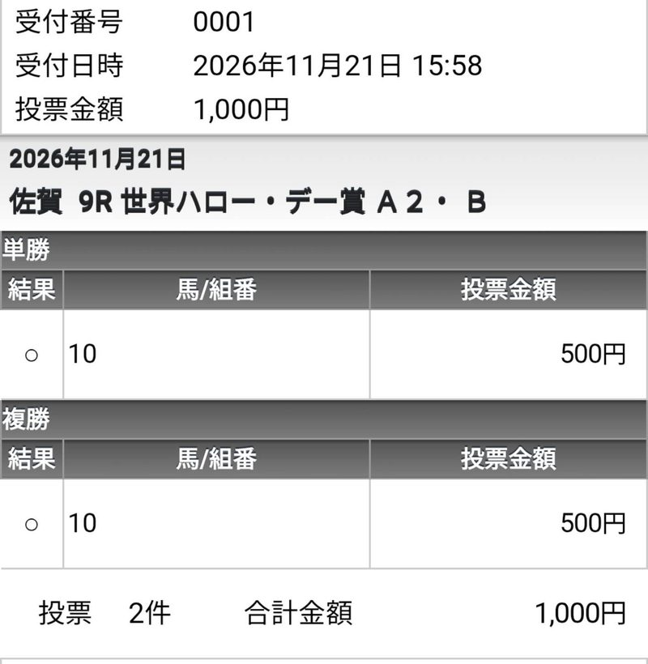

福島記念の結果
11/21 福島11R 福島記念（GⅢ）◎14 サヴォーナは15着でした。不的中で、1,000円→0円です。7番人気（単勝13.1倍）で好位で運びましたが、直線で失速しました（馬体重は-14kg）。1着は1番人気の13 マリアイリダータ、2着は11番人気の3 ゼンダンハヤブサ、3着は1 カラマティアノスでした。
予想だけの結果（予想だけ・買っていません）
福島11R 福島記念 ◎16 レイニングは12着でした（仮想払戻0円）。
予想だけの累計：7レース・的中4レース 仮想購入7,000円→仮想払戻6,250円 仮想回収率89.3%（本年成績には含みません）
なお、明日のマイルチャンピオンシップのスターアニスは、明日の記事で精算します。
＜本年成績＞
中央 214戦26勝 292,400円→181,380円 -111,020円 62%
地方 14戦4勝 14,000円→14,750円 +750円 105%
合計 228戦30勝 306,400円→196,130円 -110,270円 64%
払戻"金"投資 108,020円→92,487円 -15,533円 -14.38%
当日予想（地方競馬）
2026/11/21(土) 佐賀9R 世界ハロー・デー賞（A2・B）
19:40発走、ダート1400mです。
◎10 ダバイシュクレ 山口勲
１０ 単勝 ５００円
１０ 複勝 ５００円

佐賀1400mは近5走で1・1・1・3・1着（3着は1860mのレース）で、持ちタイム1:28.8はこのメンバー最速です。前3走はいずれも1番人気で勝ってきた馬ですが、今回は佐賀9戦9勝のアックアヴィリーレに人気が集中しています。15時52分時点のオッズは単勝13.3倍・4番人気で、人気と実力の乖離が今日一番大きいと見ました。
その他の予想（予想だけ・買っていません）
佐賀9R 世界ハロー・デー賞 ◎3 アックアヴィリーレ 飛田愛 単勝 ５００円／複勝 ５００円（仮想）
佐賀では9戦9勝の無敗馬で、単勝1.2倍（15時52分時点）の堅い本命です。堅い本命は勝負レースにせず、予想だけに回します。
高知12R ファイナルレース（C3-20 記者選抜）20:50発走、ダート1400m
◎1 カラバッシュ 多田誠 単勝 ５００円／複勝 ５００円（仮想）
前走の1600mで2着、前々走の1400mで3着と連続で好走しています。今回の1400mでも好走実績があり、単勝9.3倍・5番人気（15時52分時点）はやや過小評価に見えます。